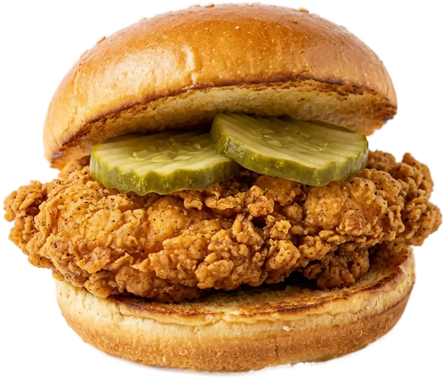

Skip the scroll. Bao picks where to eat.
Text Bao on WhatsApp. Get one pick you can trust in SF, and exactly what to order.
Get early access
free while we test in SF

try it, what are you planning?
Text Bao on WhatsApp. Get one pick you can trust in SF, and exactly what to order.
